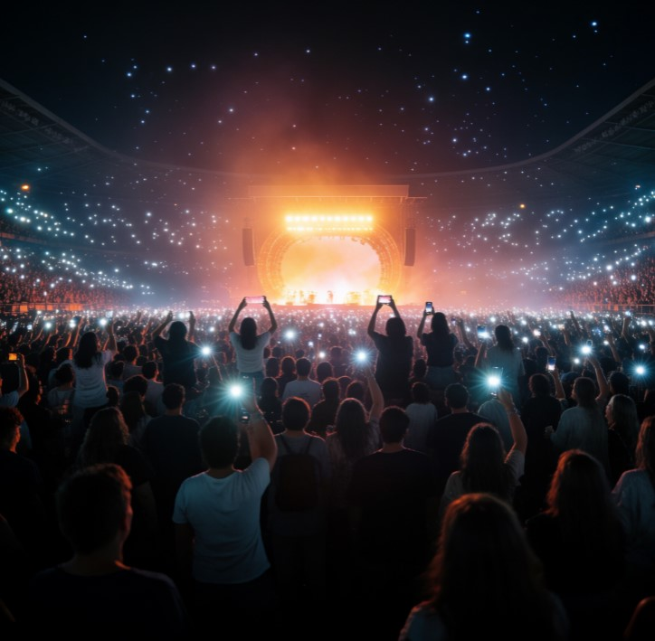

Almost everyone, regardless of how into music they generally are, has one specific concert that occupies a different category of memory than every other show they've ever attended. Not necessarily their favorite artist's best technical performance — just the one that, for reasons that don't always make complete sense afterward, became the concert.

Why One Specific Show Outlasts All the Others
Memory researchers studying autobiographical memory have found that emotionally intense experiences combined with strong sensory input (loud music, crowd energy, specific physical sensations) get encoded unusually vividly compared to ordinary memories — concerts are practically engineered to produce exactly this combination, which is part of why a single show can outlast years of otherwise similar concerts in someone's memory.
Context matters enormously too. The concert that happened right after a breakup, right before a big life change, or with the exact right group of friends at the exact right moment tends to absorb meaning from its surrounding life circumstances — meaning that has very little to do with the band's actual setlist that night.
What People Actually Remember From "The" Concert
It's rarely the full setlist. It's a specific moment: a song that hit differently than expected, a stranger in the crowd who became a friend for one night, an opener nobody had heard of who turned out to be the best part of the whole evening. These specific fragments are exactly the kind of detail that fades fastest from memory if never written down.
A Permanent Home for "The" Concert
Some music fans have started marking their defining concert memory with a star on GalaxySpace — the artist, the date, and the specific fragment of the night that actually made it matter, recorded permanently rather than left to slowly blur the way most concert memories eventually do.
You can create one here — a small, lasting tribute to the one night that, somehow, still gets brought up in conversation years later.